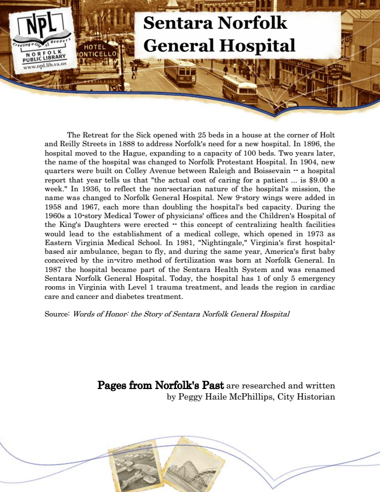

Sentara Norfolk General Hospital
The Retreat for the Sick opened with 25 beds in a house at the corner of Holt and Reilly Streets in 1888 to address Norfolk's need for a new hospital. In 1896, the hospital moved to the Hague, expanding to a capacity of 100 beds. Two years later, the name of the hospital was changed to Norfolk Protestant Hospital. In 1904, new quarters were built on Colley Avenue between Raleigh and Boissevain -- a hospital report that year tells us that "the actual cost of caring for a patient ... is $9.00 a week." In 1936, to reflect the non-sectarian nature of the hospital's mission, the name was changed to Norfolk General Hospital. New 9-story wings were added in 1958 and 1967, each more than doubling the hospital's bed capacity. During the 1960s a 10-story Medical Tower of physicians' offices and the Children's Hospital of the King's Daughters were erected -- this concept of centralizing health facilities would lead to the establishment of a medical college, which opened in 1973 as Eastern Virginia Medical School. In 1981, "Nightingale," Virginia's first hospital- based air ambulance, began to fly, and during the same year, America's first baby conceived by the in-vitro method of fertilization was born at Norfolk General. In 1987 the hospital became part of the Sentara Health System and was renamed Sentara Norfolk General Hospital. Today, the hospital has 1 of only 5 emergency rooms in Virginia with Level 1 trauma treatment, and leads the region in cardiac care and cancer and diabetes treatment.
Source: Words of Honor: the Story of Sentara Norfolk General Hospital
Pages from Norfolk's Past are researched and written by Peggy Haile McPhillips, City Historian